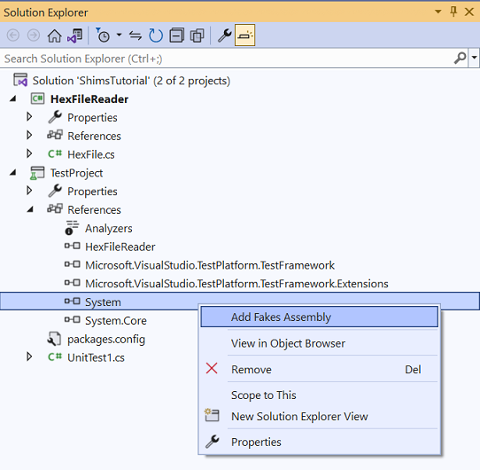

shims
Overview [Documentation]
A shim is code that intercepts a call to a method and diverts it to shim code within a test. Use shims when you need to isolate your code from external assemblies.
Example: Creating and Using Shims
- Create a class:
// HexFile.cs public class HexFile { public string[] Records { get; private set; } public HexFile(string path) { this.Records = System.IO.File.ReadAllLines(path); } } - Create a test project.
- From the test project, add a project reference to HexFile.
- Add a Fakes Assembly:
- Solution Explorer > TestProject > [Assemblies, Projects or Packages]
- Right-click the
Systemassembly > Add Fakes Assembly

- Modify
Fakes/mscorlib.fakesto exclude types that cannot be used with shims:<Fakes xmlns="http://schemas.microsoft.com/fakes/2011/" Diagnostic="true"> <Assembly Name="mscorlib" Version="4.0.0.0"/> <StubGeneration> <Clear/> </StubGeneration> <ShimGeneration> <Clear/> <Add FullName="System.IO.File"/> <Remove FullName="System.IO.FileStreamAsyncResult"/> <Remove FullName="System.IO.FileSystemEnumerableFactory"/> <Remove FullName="System.IO.FileInfoResultHandler"/> <Remove FullName="System.IO.FileSystemInfoResultHandler"/> <Remove FullName="System.IO.FileStream+FileStreamReadWriteTask"/> <Remove FullName="System.IO.FileSystemEnumerableIterator"/> </ShimGeneration> </Fakes> - Create a Unit Test
- Modify the default
UnitTest1.csfile with this test method:[TestMethod] public void TestFileReadAllLine() { // Important: each ShimContext must be disposed, so wrap in using(): using (ShimsContext.Create()) { // Arrange System.IO.Fakes.ShimFile.ReadAllLinesString = (s) => new string[] { "Hello", "World", "Shims" }; // Act var target = new HexFile("this_file_doesnt_exist.txt"); Assert.AreEqual(3, target.Records.Length); } } - Run the test.
Shim Behavior
Each generated shim type receives an IShimBehavior through the ShimBase<T>.InstanceBehavior property. Whenever a client calls a member
that has not been shimmed, this behavior is invoked. If no behavior has been set, it uses ShimBehaviors.Current which throws
a NotImplementedException by default.
This example changes the behavior so that the shim either does nothing or returns the default value of the return type:
// unit test code
var shim = new ShimMyClass();
shim.InstanceBehavior = ShimBehaviors.DefaultValue; //return default(T) or do nothing
To change the behavior globally for all shims where behavior has not been set, use ShimBehaviors.Current:
// unit test code
ShimBehaviors.Current = ShimBehaviors.DefaultValue;
Identifying Interaction with External Dependencies
By setting Behavior property of a shim type to ShimBehaviors.NotImplemented, any access to a member of that type throws a NotImplementedException. This
can serve as a signal during testing to indicate code is attempting to access an external component:
// unit test code
ShimMyClass.Behavior = ShimBehaviors.NotImplemented;
// or, use this shorthand:
ShimMyClass.BehaveAsNotImplemented();
Invoke the Original Method form Within a Shim Method
In this example, the use case might be writing text to the file system after validating the file name passed to a the method. To achieve this, there are two approaches:
- Encapsulate a call to the original method using a delegate and
ShimsContext.ExecuteWithoutShims():// unit test code ShimFile.WriteAllTextStringString = (fileName, content) => { ShimsContext.ExecuteWithoutShims(() => { Console.WriteLine("enter"); File.WriteAllText(fileName, content); Console.WriteLine("leave"); }); }; - Nullify the shim, call the original method, then restore the shim:
// unit test code ShimsDelegates.Action<string, string> shim = null; shim = (fileName, content) => { try { Console.WriteLine("enter"); ShimFile.WriteAllTextStringString = null; // remove shim in order to call original method File.WriteAllText(fileName, content); } finally { ShimFile.WriteAllTextStringString = shim; // restore shim Console.WriteLine("leave"); } }; // initialize the shim ShimFile.WriteAllTextStringString = shim;
Shimming System.Environment
See here.
Shimming Different Types of Methods
Shims for Static Methods
For static methods, a shim type has properties that hold shims. The properties only have a setter. This setter is used to attach a delegate to the targeted method:
//code under test
public static class MyClass
{
public static int MyMethod() { ... }
}
Attach a shim to MyMethod that always returns 5:
// unit test code
ShimMyClass.MyMethod = () => 5;
Shims for Instance Methods (All Instances)
For instance methods, properties that hold shims are placed in a nested type named AllInstances (because the shim is for all instances of the method):
// code under test
public class MyClass
{
public int MyMethod() { ... }
}
Attach a shim to MyMethod that always returns 5 (regardless of the instance):
// unit test code
ShimMyClass.AllInstances.MyMethod = () => 5;
Shims for Instance Methods (Single Instance)
For instance methods where only a single instance is shimmed, properties that hold these shims are instance methods of the shim type itself:
// code under test
public class MyClass
{
public int MyMethod() { ... }
}
Create two shim types for MyMethod, one that always returns 5 and one that always returns 10:
// unit test code
var myClass1 = new ShimMyClass()
{
MyMethod = () => 5
};
var myClass2 = new ShimMyClass {
MyMethod = () => 10
};
Access the shimmed type instance either through the Instance property…
// unit test code
var shim = new ShimMyClass();
var instance = shim.Instance;
…or directly via an implicit conversion:
// unit test code
var shim = new ShimMyClass();
MyClass instance = shim; // implicit cast retrieves the runtime instance
Shims for Constructors
Every constructor is represented as a static method named Constructor within the shim type:
public class MyClass
{
public MyClass(int value)
{
this.Value = value;
}
...
}
Create a shim type for the constructor that will always return -5:
// unit test code
ShimMyClass.ConstructorInt32 = (@this, value) =>
{
var shim = new ShimMyClass(@this)
{
ValueGet = () => -5
};
};
Each shim type exposes two constructors:
// unit test code
public ShimMyClass() { } // Use this one when a new instance is needed
public ShimMyClass(MyClass instance) : base(instance) { } // Use this one only in constructor shims
Shims for Static Constructors
Shim types expose a static method StaticConstructor to shim the static constructor of a type.
Shims for Finalizers
Finalizers are not supported in Fakes.
Shims for Base Members
To create shimmed properties of base members, create a shim of the base type, a shim of the child type, then input child type shim into the constructor of the base shim:
public abstract class MyBase { // the base type
public int MyMethod() { ... }
}
public class MyChild : MyBase { } // the child type
// unit test code
var child = new ShimMyChild(); // a shim of the child
new ShimMyBase(child) { MyMethod = () => 5 }; // input the shim of the child into the constructor of the base shim
Shimmed Types of Interfaces
When a shimmed type implements an interface, a method named Bind is generated that allows it to bind all the members for that interface at once:
public class MyClass : IEnumerable<int>
{
public IEnumerator<int> GetEnumerator() { ... }
...
}
Shim all implementations of IEnumerable<int> in MyClass by calling Bind:
// unit test code
var shimMyClass = new ShimMyClass();
shimMyClass.Bind(new List<int> { 1, 2, 3 });